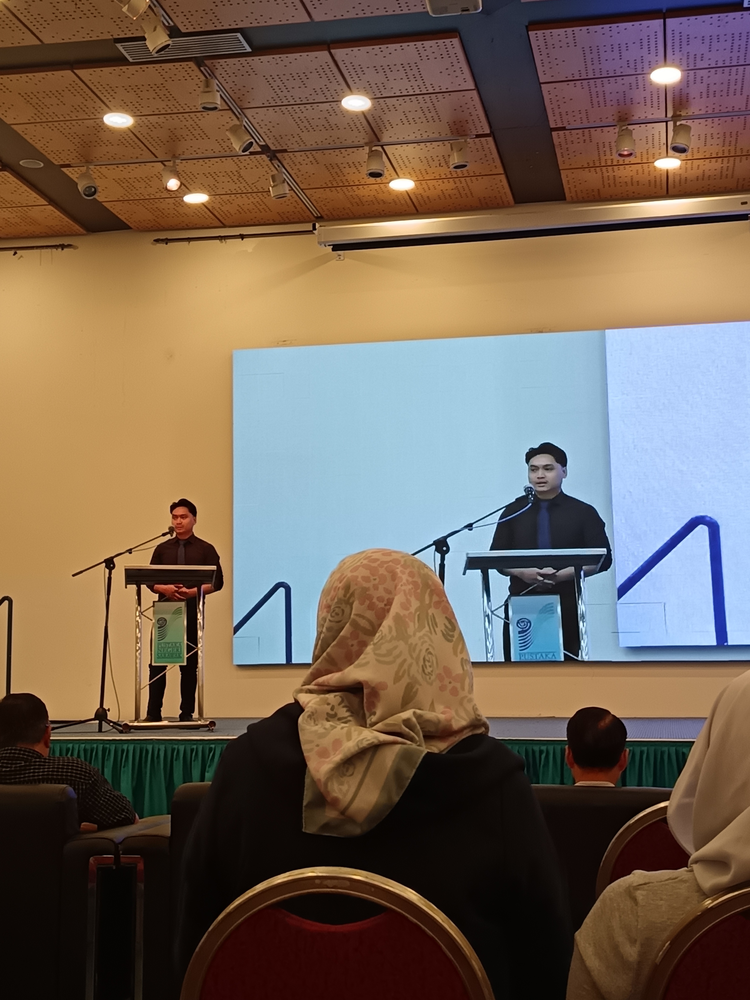

MY JOURNEY AND LIFE EXPERIENCES
During my primary school years, I gained basic knowledge in subjects such as English, Mathematics, Science, and Bahasa Melayu. I found Mathematics quite easy, and Science was one of my favourite subjects. These early learning experiences helped build my foundation for further studies.
My secondary school life was filled with unforgettable moments, challenges, and valuable lessons. I learned many new things and experienced both happy and difficult times. These experiences helped me grow and become the person I am today. Although my school days have ended, the memories will always remain meaningful to me.
My university life in Sarawak has been a new and unforgettable experience. Everything felt new at first, from the environment to the culture and people. Throughout my journey, I have made new friends, learned about their traditions, and even picked up some words from their local languages. I also had the opportunity to explore unique and beautiful places in Sarawak. Every moment, friendship, and adventure has become a precious memory that I will cherish when I return to my hometown.
Internship: During my internship, I gained valuable experience in assisting with library programmes, organising events, working with staff, and supporting community activities.
Security Guard: I worked as a security guard, where I was responsible for maintaining safety and monitoring the surroundings.
Factory Worker: I also worked as a factory worker, lifting and moving goods. This experience taught me the importance of teamwork, discipline, and responsibility.
One of my meaningful travel experiences was travelling alone to Sarawak to further my studies. It was my first time going through such a big journey independently. The experience was emotional and unforgettable because I had to leave my hometown and adapt to a new environment on my own. It taught me to become more independent, brave, and confident.
My most memorable experience is spending time with my family. No matter how many places I visit or experiences I have, nothing compares to the happiness of being with my family. Those simple moments together mean the most to me.
Throughout my school and university journey, I have achieved several milestones:
• Became a head prefect during primary school.
• Participated in a state-level camp in Tamparuli.
• Represented my secondary school in athletics.
• Received the Dean's Award at UiTM.
• Received an internship certificate from Pustaka Negeri Sarawak.
